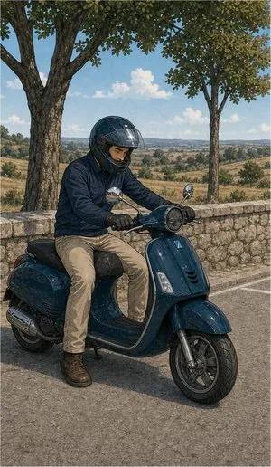
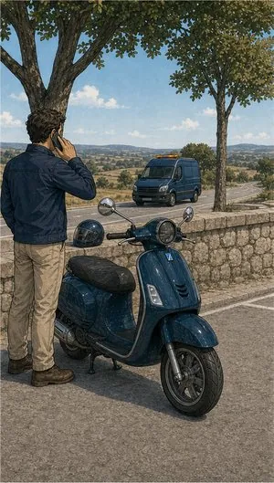
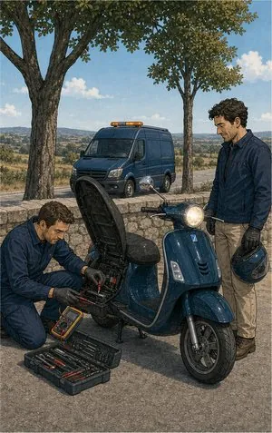
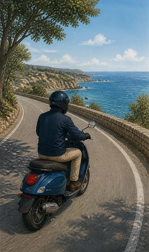

Seguro de motociclo
A parte obrigatória é igual à do carro. Muda o resto — porque numa mota o corpo do condutor é a carroçaria.
O que pode incluir
O mesmo mínimo legal.
Um risco muito diferente.
A obrigação de responsabilidade civil é a mesma dos automóveis: circular sem ela custa coima, apreensão e a responsabilidade pessoal pelas indemnizações. Mas o que decide a qualidade de um seguro de mota são as coberturas que ninguém pergunta.
Responsabilidade civil obrigatória
Cobre os danos causados a terceiros, até aos capitais mínimos fixados por lei e revistos periodicamente.
Proteção do condutor
A cobertura mais importante numa mota. Trata das suas próprias lesões — despesas médicas, invalidez, morte — que a responsabilidade civil não cobre quando a culpa é sua.
Capacete e equipamento
Cobertura opcional para casaco, luvas, botas e capacete danificados, em regra associada a um sinistro garantido pela apólice.
Danos próprios
Choque, colisão e capotamento. Nas motas de valor mais alto compensa quase sempre.
Furto e roubo
O risco é substancialmente maior do que num automóvel. Verifique se a apólice exige sistema antifurto homologado.
Assistência em viagem
Reboque adaptado a duas rodas e regresso a casa, no âmbito e limites previstos na solução contratada.
Incêndio, raio e explosão
Contratada normalmente em conjunto com furto e roubo.



Sem letra pequena
Onde a cobertura
acaba.

Uma leitura geral, para chegar à conversa com ideias claras. Cada apólice tem as suas condições — e lemo-las consigo.
Ver o que está e o que não está coberto lista indicativa
Normalmente coberto
- Danos corporais e materiais a terceiros, dentro dos capitais legais.
- Lesões do condutor, se contratada a proteção do condutor.
- Capacete e vestuário de proteção, quando a cobertura de equipamento existe.
- Furto ou roubo do veículo, cumpridas as exigências de segurança da apólice.
- Incêndio e fenómenos da natureza, consoante as coberturas escolhidas.
- Assistência e reboque adaptados a veículos de duas rodas.
Normalmente excluído
- Condução sem carta adequada à cilindrada — A1, A2 ou A conforme o caso.
- Provas de velocidade, treinos e utilização em circuito.
- Passageiro transportado fora das condições homologadas do veículo.
- Alterações não homologadas ao motor ou ao escape.
- Furto sem sistema antifurto exigido nas condições particulares.
- Álcool ou estupefacientes acima dos limites legais.
Para quem
Scooter para a cidade
Uso diário e curtas distâncias. Aqui pesam a assistência ao quilómetro zero e o furto — a scooter passa muito tempo estacionada na rua.
Mota de estrada ao fim-de-semana
Poucos quilómetros e utilização recreativa. Vale a pena declarar o uso real e reforçar proteção do condutor e equipamento.
Ciclomotor até 50 cm³
Continua a ser obrigatório o seguro de responsabilidade civil, mesmo em veículos de baixa cilindrada conduzidos por jovens. É uma das faltas mais comuns e mais caras.
Informação resumida e de caráter geral. As condições que valem são as da informação pré-contratual e contratual do produto proposto.
Quem define coberturas, capitais e exclusões é a companhia. Veja a página oficial do produto e traga-nos as dúvidas.
Perguntas frequentes
As perguntas
mais frequentes.
O seguro da minha mota cobre o passageiro?
A responsabilidade civil obrigatória cobre os danos ao passageiro, que conta como terceiro. Não cobre as lesões do próprio condutor — para isso existe a proteção do condutor.
Posso suspender o seguro no Inverno?
Há soluções que preveem suspensão temporária em veículos recolhidos. O que se mantém coberto e o efeito no prémio dependem da apólice — e o veículo não pode circular nesse período.
Verificamos com a companhia se a sua apólice o permite e em que condições.
O meu capacete está mesmo coberto?
Só se existir cobertura específica de equipamento do condutor, que é opcional e não vem em todas as apólices. Vale a pena confirmar antes de subscrever.
Tenho carta A2. Posso segurar qualquer mota?
Pode segurar, mas se conduzir uma mota acima da categoria da sua carta o sinistro pode ser recusado. A seguradora verifica a habilitação legal do condutor no momento do acidente.
Vale a pena ter danos próprios na minha mota?
Depende do valor. Numa mota recente compensa quase sempre; numa mota antiga o prémio aproxima-se do valor de indemnização. Fazemos a conta consigo antes de recomendar.
Duas rodas pedem
outras contas.
Ligue e diga a cilindrada, o uso e onde a mota dorme. A simulação sai daí.
Sem compromisso. Não usamos os seus dados para mais nada.